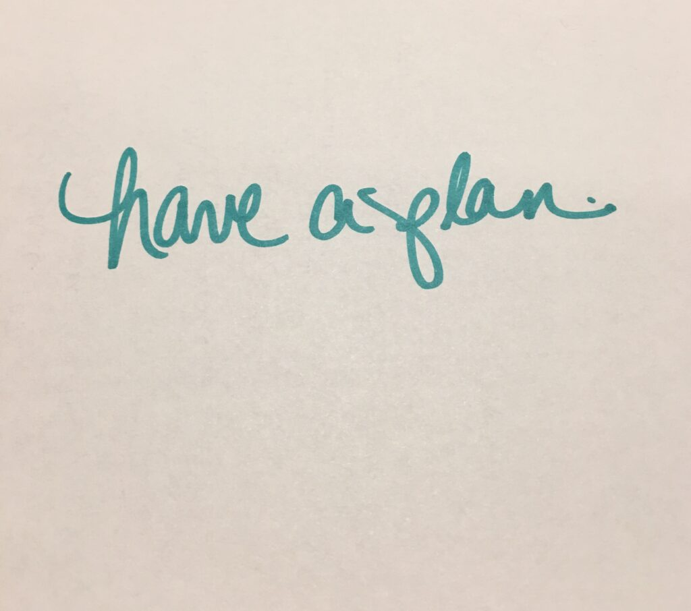
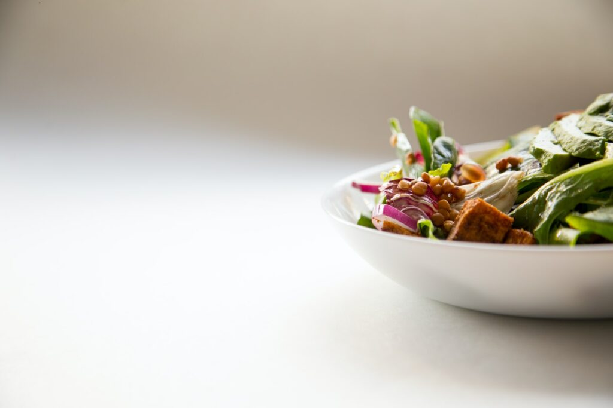
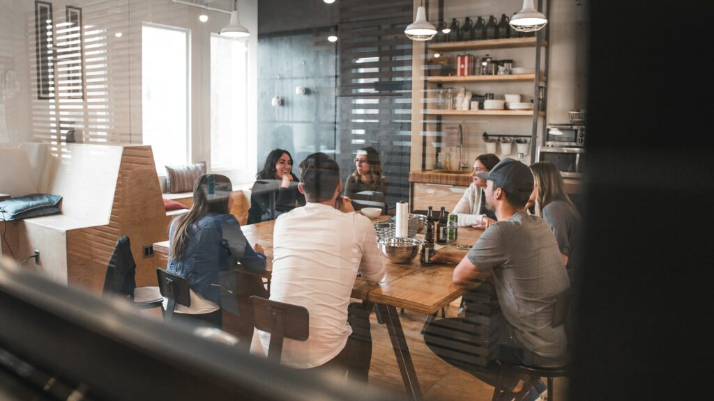

Hybrid Remote Will Always Be… Author: Michelle Lagos CEO
The shifts in the way we work in the last two years have been significant. Many people believe work will never be the same—given the tectonic shifts in where work happens and how it gets done. And many would argue this is a good thing—with a new appreciation for the challenges and rewards of work, there is the opportunity to be more intentional about how work works best. It also brings down the overhead of the overall company budgets substantially with smaller brick and mortar business bases.
Hybrid work has pros and cons for sure. Although, working in your fuzzy slipper/socks, and undisturbed for longer periods, may give you a long list of personal and productive positives, occasionally feeling disconnected from your colleagues does tend to creep into most teams.
So, what are the solutions being used now? Letting each member review in-office team and collaboration calendars and choose which timeframes work best to schedule themselves in which gives then the ability to control that need.
Overall, hybrid and versions of remote work seems to offer the best of both worlds: The opportunity to work at home, in remote locations or in the office based on what you need to accomplish and prefer.

So, what are the best aspects of hybrid work and remote work?
BETTER LIFE
In the work-life equation, life is an important element. Hybrid work—which, by definition, has included more remote work time—has allowed people to embrace life more fully. Avoiding the commute has meant people can potentially get more sleep by setting the alarm a little later in the morning, or they can engage more immediately with family when the last meeting wraps up for the day. In addition, being home has meant they can eat more healthfully with access to their own pantry rather than dependence on the food trucks outside their office.
More remote work has also meant that many people can access nature more efficiently, participating in a meeting while walking in the neighborhood or a nearby park, or enhance their fitness by jumping on their bike or treadmill during a break in their daily schedule. Remote work has offered efficiencies—and these result in more flexibility to do more of what means the most for people—whether that’s related to health, family, or the like. Overall, the benefit is in people being able to use their time for what means the most to them. Overall, it does reduce emissions as driving activities significantly decrease.
See some of the following articles below:
https://www.inc.com/inc-masters/how-hybrid-work-can-support-employee-mental-health-and-increase-retention.html https://www.forbes.com/sites/bryanrobinson/2022/02/04/3-new-studies-end-debate-over-effectiveness-of-hybrid-and-remote-work/?sh=5e79c68e59b2 https://enterprisersproject.com/article/2021/7/hybrid-work-advantages https://www-seattletimes-com.cdn.ampproject.org/c/s/www.seattletimes.com/opinion/the-future-of-work-is-hybrid-seamless-and-inclusive/?amp=1
BETTER WORK
Hybrid work has driven many employers to improve offices because they know they need to attract people away from their homes. The office must “earn the commute” by offering enough benefits that people are willing to make the trip in. The most successful employers are investing in workplaces that work better for people than they did before.
Multiple locations for work—home, remote locations, or office locations—also offer the benefit of greater choice. And greater choice and control are good for people’s sense of autonomy, empowerment, and engagement. With more choice, people can do more focused work. In the past, it may have been tough to find places to do deep thinking. But hybrid work allows people with quiet places at home to dig in, or people without a moment of peace at home to choose a conference room in an office location or even a nearby park to get contemplative work done. Likewise, people have generally had a greater range of choices for where they can collaborate, learn, socialize or rejuvenate.
For many, hybrid work has also been the driver of better technology. Companies had to provide more laptops, second monitors, or even more training on tech—making tools more available and more accessible to more people.
Learning has also been enhanced because it’s easier to take advantage of more growth opportunities from a distance. Instead of traveling to the conference or commuting to the training session, employees can log into webinars or roundtables and feed their curiosity about new topics. Or they can develop their skills with less investment of the time or energy associated with the logistics of in-person attendance.
BETTER THINKING
Tough times have created the need for more creativity, and this has made people better problem-solvers and innovators. People have had to figure out how to facilitate a workshop from a distance or solve a thorny customer problem working together with colleagues in multiple locations—inside and outside of the office. All of this has necessitated new modes for collaborating, new technology for connecting, new norms for communicating, and new ways of thinking through potential solutions.
People have also had to think more independently. When you’re working remotely, it’s impossible to lean over and rely on a colleague for advice. Of course, it’s still possible to IM or reach out remotely, but the immediacy of help has been reduced, and this has promoted more independence in terms of thinking through the right approach, seeking the best information, and figuring things out individually.
BETTER RELATIONSHIPS
Sociologically, bonds are strengthened when people go through hard times, and the last couple of years certainly qualify. For many, remote work has created distance, but it has also created the opportunity to connect and commiserate and to share experiences and advice.
In addition, when you can’t interact with people as easily—for example in the elevator lobby or in line at your work café—it causes you to be more intentional about relationships. People are setting up one-on-one meetings in order to maintain links, and they are more purposeful in their communication—knowing how important it is to sustain their friendships and their networks. All of this makes people appreciate each other more and invest in the relationships which are most important.

TAKING IT FORWARD
Hybrid work and remote work have offered advantages—and plenty of opportunities for learning and growth. The aspects which have been most positive will be critical to take forward. In a worst-case situation, people will go back to business as usual and leave behind the new ways of working which have gained momentum. But if we’re conscious of what’s worked and what hasn’t, we can instead maintain the benefits of hybrid working and move forward with work that works better than ever.